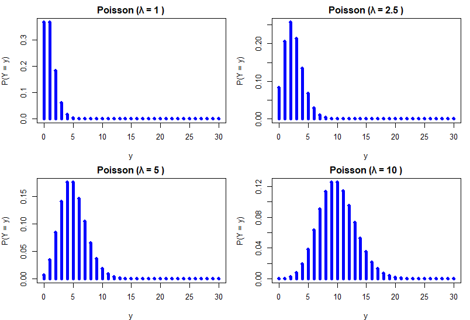
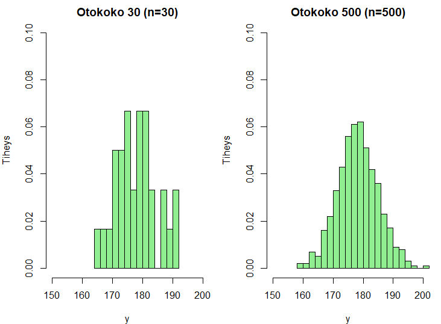
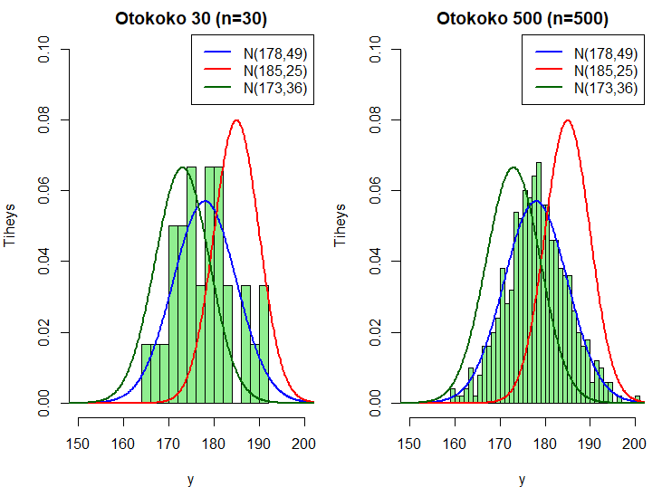
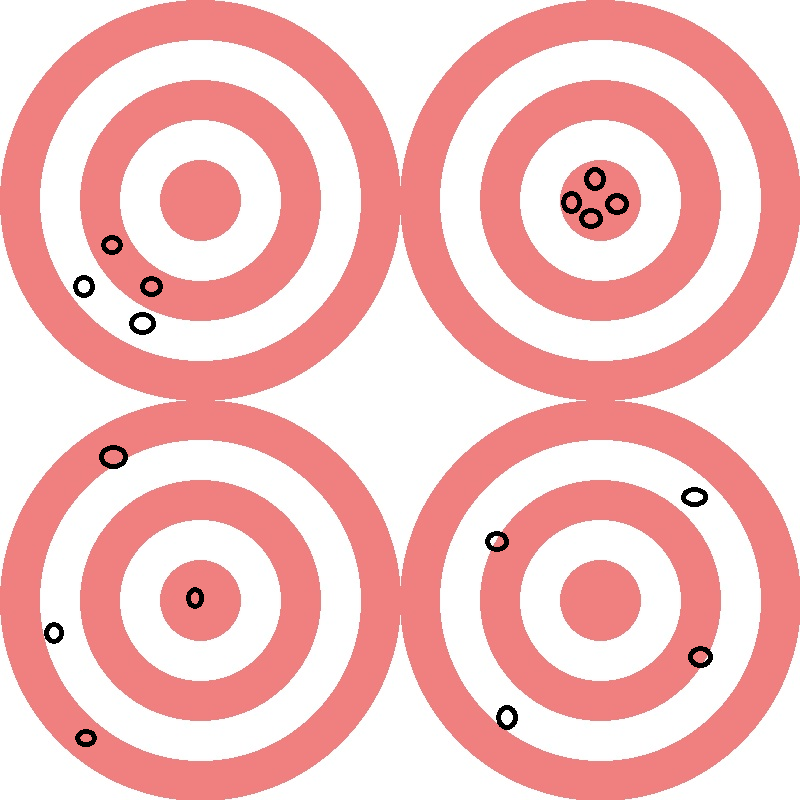

11 Satunnaisotokset: Tilastollisen päättelyn näkökulma
Tarkastellaan seuraavaksi otoksia ja otosjakaumia hieman “tilastollisemmin” mitä aiempien otantaa koskevien lukujen yhteydessä. Tilastollinen päättely on keskeinen osa tilastotiedettä, sillä se mahdollistaa päätelmien yleistämisen otoksesta populaatioon/perusjoukkoon.
Tämä ja seuraava luku toimivat esimerkkeinä formaaliin matemaattiseen esitykseen perustuvan tilastollisen päättelyn perusteista (otannan ja otantajakaumien näkökulmasta), jonka yleinen iso idea on yleisesti tehdä luotettavia johtopäätöksiä perusjoukosta otoksen perusteella.
Tällä kurssilla käydään läpi (vain) tarvittavia yksityiskohtia sekä rakennetaan pohjia todennäköisyyslaskennan ja tilastollisen päättelyn peruskurssille.
11.1 Satunnaisotos, yhteisjakauma ja tilastollinen malli
Aiemmista luvuista muistamme, että tilastollisen tutkimuksen kohteena ovat satunnaisilmiöt, joita kuvataan satunnaismuuttujia käyttäen. Satunnaismuuttujilla on todennäköisyysjakaumat, joita tilastotieteessä kuvataan diskreettien sm:jien tapauksessa pistetodennäköisyysfunktion ja jatkuvien sm:jien tapauksessa tiheysfunktion avulla.
Merkitään satunnaismuuttujaa edelleen isolla kirjaimella, (Y), ja satunnaismuuttujan realisaatiota pienellä kirjaimella (y). Otoskokoa, eli otokseen osallistuvien tilastoyksiköiden määrää merkitään (n):llä ja tilastoyksiköitä indeksöidään alaindeksillä (i=1,,n).
Otoksen poimimisen jälkeen satunnaismuuttujat (Y_1, , Y_n) saavat havaituiksi arvoikseen havaintoarvot (y_1, , y_n) (ts. (Y_1=y_1, , Y_n = y_n)).
Näin havaintoaineisto on siis satunnaisotos, joka voidaan määritellä tarkemmin seuraavasti.
Satunnaisotos. Olkoot (Y_1, , Y_n) riippumattomia ja samoinjakautuneita satunnaismuuttujia, joiden tiheysfunktiota (tf., tai pistetodennäköisyysfunktiota (ptnf)) merkitään (f(y, )):llä, jossa (y):n on yksittäisen sm:n (Y) reaalisaatio ja () on jokin jakauman muodon määräävä parametri (tai parametrit).
Parametrin () arvoa ei yleensä tunneta ja tavoitteena onkin päätellä, estimoida, sen arvo käytettävissä olevasta aineistosta.
Satunnaisotoksen tilastollinen malli
Havaintoarvot (y_1, , y_n) ovat kiinteitä lukuja, mutta ne vaihtelevat satunnaisesti otoksesta toiseen. Satunnaisotannassa satunnaisuus liittyy siis havaintoarvojen vaihteluun satunnaisesti otoksesta toiseen.
- Satunnaisuus ei siis liity otannan tuloksena saatuihin havaintoarvoihin, vaan otoksen poimintaan. Toisin sanoen, yksittäisen tilastoyksikön havaintoarvo (esim. pituus) on kiinteä luku. Satunnaisotannassa satunnaisuus kumpuaa siis siitä, että tilastoyksikkö tulee valituksi otokseen sattumanvaraisesti.
Yhteisjakauma - Satunnaismuuttujien (Y_1, , Y_n) yhteisjakauma muodostaa tilastollisen mallin havaintoarvojen satunnaiselle vaihtelulle eri otoksissa.
Yhteisjakaumaa merkitään (f(y_1,,y_n;)), jossa havaitut arvot (y_i) ovat kiinteitä ja parametri () on tuntematon.
Koska tällä kurssilla satunnaismuuttujat (Y_1, , Y_n) oletetaan riippumattomiksi toisiinsa nähden, niiden yhteisjakauma on tulomuotoa
\[\begin{equation*} f(y_1, \ldots, y_n; \theta) = f(y_1; \theta) \cdots f(y_n; \theta). \end{equation*}\]
Tilastollisen päättelyn ensimmäinen tavoite ja tehtävä on pyrkiä havaitun aineiston (y_1,,y_n) avulla estimoimaan parametrin () arvo niin, että havaintojen yhteisjakauma kuvaa aineistoa parhaalla mahdollisella tavalla.
- Tässä (f(y_1, , y_n; )) on siis (tilastomatemaattisessa mielessä) tilastollinen malli. Tilastollisen mallin monimutkaisuus ilmenee sen parametrien määrästä eli ts. kuinka monta parametria sisältyy \(\theta\):aan. Mitä enemmän parametreja (erit. suhteessa havaintojen määrään), sitä monimutkaisempi malli.
Parsimoonisuusperiaate - Useimmiten ja perinteisesti ajatellaan, että on käytettävä niin yksinkertaisia menetelmiä kuin mahdollista, mutta ei yhtään yksinkertaisempia. Tämä on ns. parsimoonisuusperiaate eli vähäparametrisuus- tai säästeliäisyysperiaate.
Harhan ja varianssin kompromissi - Vähäparametrisuusperiaatteen voidaan nähdä perustuvan ns. Occamin partaveitsen -periaatteeseen, jonka mukaan “ilmiöitä selittävien tekijöiden määrän tulee olla mahdollisimman vähäinen”, ts. tilastotieteessä menetelmien (mallien) tulee olla mahdollisimman yksinkertaisia, mutta silti riittäviä. Tämä periaate ja sen suhde ns. varianssin ja harhan väliseen kompromissiin on erityisen tärkeää tilastollisen ennustamisen ja viime vuosikymmeninä yleistyneen tilastollisen (kone)oppimisen sovellutuksissa. Tähän palataan vielä myöhemmin ennustamista koskevassa luvussa.
- Mallin muodon määrää tutkijan tekemä aineistoa koskeva jakaumaoletus satunnaismuuttujille \(Y_i, \, i=1,...,n\), mikä voi paikoin olla hyvinkin monimutkainen.
Oletetaan, että (Y_1, , Y_n) ovat aiempien oletusten pätiessä riippumattomia sm:jia ja että ne muodostavat satunnaisotoksen jakaumasta, jonka odotusarvo on () ja varianssi on (^2).
- Ts. oletamme
\[\begin{equation*} \mathsf{E}(Y_i) = \mu, \quad \text{ja} \quad \mathsf{Var}(Y_i) = \sigma^2, \quad i=1,\ldots,n. \end{equation*}\]
Tässä tapauksessa mielenkiinnon kohteena olevat parametrit ovat siis () ja (^2) eli (= (^2)). Tässä \(\theta\) on siis vektori, joka koostuu kahdesta parametrista.
Tutkimuskysymyksestä johdetut hypoteesit voisivat koskea esimerkiksi näitä parametreja, tai tarkemmin niiden oikeita arvoja, jotka ovat siis lähtökohtaisesti tuntemattomia.
Tilastollisten mallien tehtävänä on siis estimoida nämä todennäköisyysjakaumien parametrit havaitun aineiston perusteella, joten keskeinen tilastollinen kysymys on, että miten estimointi suoritetaan luotettavasti? Estimointi voidaan perustaa (tiettyjen oletusten pätiessä) nk. uskottavuusfunktion käyttöön ja suurimman uskottavuuden (SU) menetelmään, mitä sivuttiin hyvin lyhyesti Osassa I ja tarkastellaan tarkemmin myöhemmissä tilastotieteen opinnoissa.
Esimerkki: Satunnaisotos normaalijakaumasta. Normaalijakautuneiden satunnaismuuttujien satunnaisotokselle pätee \((Y_1, \ldots, Y_n), \,\, Y_i \thicksim \text{N}(\mu, \sigma^2),,, i=1,\ldots,n)\).
- Huom. tässä pätee myös oletus että sm:t (\(Y_1,\ldots,Y_n\)) ovat riippumattomia ja samoin jakautuneita. Toisinaan käytetään lyhenteitä iid tai i.i.d, jotka tulevat englannin kielen ilmaisusta “independent and identically distributed”.
Jos tätä oletusta vahvistetaan vielä normaalisuusoletuksella, kuten yläpuolella, niin käytettäisiin lyhennettä nid eli normally and independently distributed.
Merkintä soveltuu käytettäväksi muidenkin jakaumien tapauksessa.
- Esimerkiksi R-ohjelmassa voidaan generoida 10 havainnon (\((n=10)\)) satunnaisotos standardinormaalijakaumasta, eli kun \(\mu=0\) ja \(\sigma^2=1\) (ts. \((Y_i \thicksim \text{N}(0,1),, i=1,\ldots,10)\)) komennolla rnorm(10).
11.2 Tilastollisia jakaumia
Tarkastellaan seuraavassa muutamia keskeisiä tilastollisia jakaumia. Esittelemme ensin keskeisintä jatkuvien satunnaismuuttujien jakaumaa, normaalijakaumaa, ennen muutamien keskeisimpien diskreettien satunnaismuuttujien jakaumia.
11.2.1 Normaalijakauma
Normaalijakauma
Jos satunnaismuuttuja (\(Y\)) noudattaa normaalijakaumaa odotusarvolla (\(\mathsf{E}(Y)= \mu\)) ja varianssilla (\(\mathsf{Var}(Y) = \sigma^2\)), niin tällöin merkitään (\(Y \thicksim \text{N}(\mu, \sigma^2)\)).
(\(Y\)):n tiheysfunktio on normaalijakauman tapauksessa muotoa (ks. myös Osan I normaalijakauman tiheysfunktioiden kuvaajia eri parametriarvojen tapauksessa) \[\begin{equation*} f(y; \mu, \sigma^2) = \frac{1}{\sqrt{2 \pi \sigma^2}} \, e^{-\frac{1}{2} \Big(\frac{y- \mu}{\sigma} \Big)^2} = = \frac{1}{\sqrt{2 \pi \sigma^2}} \, \mathrm{exp}\Big(-\frac{1}{2} \Big(\frac{y- \mu}{\sigma} \Big)^2\Big), \end{equation*}\] jossa (\(e\)) viittaa potenssia laskettaessa Neperin lukuun (\(e \approx 2.71828\)).
Ylläoleva tiheysfunktio määrittelee parven normaalijakaumia kun parametreille (vakioille) (\(\mu\)) ja (\(\sigma^2\)) annetaan erilaisia arvoja. Nämä kaksi parametria määräävät normaalijakauman tarkemman muodon.
Esimerkki: Miesten pituus. Tutkitaan miesten pituutta hyvin määritellyssä joukossa, kuten varusmiespalvelusta tiettynä vuonna suorittavien joukossa (vrt. jo aiemmin esitelty Pearsonin klassinen isien ja poikien pituusesimerkki)
Pituus on ominaisuus, jonka voidaan nähdä määräytyvän monista perintö- ja ympäristötekijöistä. Pituutta voidaan siis pitää satunnaismuuttujana.
Oletetaan, että pituus noudattaa normaalijakaumaa. Näin ollen sm. (\(Y\)) on valitun miehen pituus ja \(Y \thicksim \text{N}(\mu, \sigma^2)\).
Tuntemattomien parametrien (\(\mu\)) ja (\(\sigma^2\)) tulkinta:
Odotusarvo (\(\mu = \mathsf{E}(Y)\)) on satunnaisesti valitun miehen pituuden odotettavissa oleva arvo.
Varianssi (\(\sigma^2 = \mathsf{Var}(Y) = \mathsf{E} \left[\left(Y- \mu \right)^2 \right]\)) kuvaa valitun miehen pituuden odotusarvostaan määrätyn poikkeaman (keskihajonnan) neliön odotettavissa olevaa arvoa (kuvaten ts. pituuksien jakauman keskittyneisyyttä/hajaantuneisuutta pituuksien odotusarvon ympärillä).
11.2.2 Bernoulli- ja binomijakauma
Bernoulli-jakauma ja sen laajennuksena toistokoetyyppisissä tilanteissa käytettävä binomijakauma ovat diskreettejä jakaumia, joiden avulla voidaan tiivistää onnistumiskertojen lukumääriä ja tapausten prosentuaalisia osuuksia, joissa onnistunut tapahtuma sattui. Kyseessä on siis diskreettien satunnaismuuttujien realisaatiot ja niiden suhteellinen osuus ko. otoksessa. Bernoulli-jakauma
Bernoulli-jakauma (tai Bernoullin jakauma) on (diskreetti) todennäköisyysjakauma, jossa satunnaismuuttujalla \(Y\) on kaksi mahdollista tulosvaihtoehtoa \(Y=1\) tai \(Y=0\).
Yleensä \(Y=0\) tarkoittaa, että jokin tapahtuma ei tapahdu ja \(Y=1\) että tapahtuu.
Todennäköisyys tapahtumalle \(Y=1\) on \(\text{P}(Y=1)=p\) ja vastaavasti vastatodennäköisyys \(\text{P}(Y=0)=1-p\).
Bernoulli-jakaumaa merkitään \(Y \thicksim B(p)\), jossa siis \(0 < p < 1\).
Bernoulli-jakauman pistetodennäköisyysfunktio on muotoa \[\begin{equation*} f(y; p) = \text{P}(Y=y) = p^y (1-p)^{(1-y)}, \end{equation*}\] jossa (\(y\)) on sm:n (\(Y\)) realisaatio (havaittu arvo) ja parametri (\(p\)) on tuntematon, jota voidaan estimoida otoksen avulla, kuten myöhemmin tullaan näkemään.
Bernoulli-jakautuneen sm:jan odotusarvo \(\mathsf{E}(Y)=p\) ja varianssi \(\mathsf{Var}(Y)=p (1-p)\).
Todetaan tässä kohtaa lyhyesti seuraavasta eli Bernoulli-jakauma (ja binomijakauma sen laajennuksena) liittyy logistiseen regressioon eli regressiomalliin, jossa vastemuuttuja on binäärinen. Käytännössä malli voidaan nähdä mallina logaritmiselle vetosuhteelle onnistumisen ja epäonnistumisen todennäköisyyksien välillä.
Käsitteet odds (vetokerroin) ja laajemmissa tarkasteluissa odds ratio (ristisuhde tai vetosuhde) liittyvät tähän.
Esimerkiksi, koska sadasta pekonia syömättömästä henkilöstä 6 saa suolistosyövän ja 94 ei saa, odds on tässä tapauksessa 6/94, jota joskus kutsutaan myös 6-94.
Kertoimia käytetään yleisesti Isossa-Britanniassa vedonlyönnissä, mutta niitä käytetään myös laajasti mittasuhteiden tilastollisessa mallintamisessa. Tämä tarkoittaa, että lääketieteellisessä tutkimuksessa hoitotoimenpiteiden tai käyttäytymisen vaikutuksia ilmaistaan usein kertoimien suhteena.
Binomijakauma
Binomijakauma. Olkoon \(Y_1, \ldots, Y_n\) riippumattomia satunnaismuuttujia ja \(Y_i \thicksim B(p), , i=1,\ldots,n\). Jos \(X = Y_1 + Y_2 + \ldots + Y_n\), niin \(X \thicksim \mathrm{Bin}(n,p)\). Ts. sm. \(X\) noudattaa binomijakaumaa parametrein \(n\) ja \(p\).
- Binomijakaumalla kyetään vastaamaan mm. kysymykseen millä todennäköisyydellä \(n\):n kokoisessa otoksessa tapahtuu \(k\) onnistumista.
Esimerkki: Miesten lukumäärä Saksin osavaltion perheissä 1876–1885. Vuosien 1876–1885 aikana Saksin osavaltiossa rekisteröitiin yli neljä miljoonaa syntynyttä lasta. Tällöin vanhempien tuli ilmoittaa lapsen sukupuoli (mies tai nainen) heidän syntymätodistuksessaan. Myöhemmässä tutkimuksessa tutkittiin tarkemmin 6115 perhettä, joissa asui 12 lasta ja tarkemmin miesten (poikien) lukumäärää näissä perheissä. Oheisessa taulukossa taulukoidaan miesten (poikien) lukumäärät näissä 12 lapseen perheissä.
- Ks. tarkemmin esimerkki 3.2 Friedlyn ja Meyerin kirjassa (s. 67-68, 2015).
Miesten lukumäärä Saksin osavaltiossa 12:n lapsen perheissä:
| | 0 | 1 | 2 | 3 | 4 | 5 | 6 | 7 | 8 | 9 | 10 | 11 | 12 |
|----------------|----|----|-----|-----|-----|------|------|------|-----|-----|-----|----|----|
| Miesten lkm | 0 | 1 | 2 | 3 | 4 | 5 | 6 | 7 | 8 | 9 | 10 | 11 | 12 |
| Perheiden lkm | 3 | 24 | 104 | 286 | 670 | 1033 | 1343 | 1112 | 829 | 478 | 181 | 45 | 7 |Tässä tilantessa mielenkiinnon kohteena saattaisi olla hypoteesi, jonka mukaan pojan (miehen) syntymätodennäköisyys (\(\text{P}(\mathrm{mies}) = p\) on \(p=0.5\).
11.2.3 Poisson-jakauma
Poisson-jakauma
Poisson-jakauma (Poissonin jakauma). Jos satunnaismuuttuja (\(Y\)) on Poisson-jakautunut, merkitään \(Y \thicksim P(\lambda)\), jossa parametri \(\lambda > 0\) on Poisson-jakauman parametri.
Poisson-jakaumaa voidaan käyttää tilanteissa, joissa sm. (\(Y\)) on jokin lukumäärä ja sen pistetodennäköisyysfunktio on muotoa \[\begin{equation*} \text{P}(Y=y) = \frac{e^{-\lambda} \lambda^y}{y!}, \qquad y=0,1,2,\ldots \end{equation*}\]
Odotusarvo ja varianssi ovat Poisson-jakauman tapauksessa samat: \(\mathsf{E}(Y) = \mathsf{Var}(Y) = \lambda\).
Alla kuvassa on kuvattu Poisson-jakauman pistetodennäköisyysfunktion muotoja parametrin (\(\lambda\)) eri arvoilla.
Esimerkki: Poisson-jakauma ja urheilutilastotiede. Tarkastellaan Englannin Valioliigakauden 1995–1996 otteluissa tehtyjä maalimääriä. Valioliiga (The F.A. Premier League) on korkein Englannin jalkapalloliigan sarjataso, jossa ensi kerran juuri kaudella 1995-1996 20 joukkuetta (aiemmin Valioliigan perustamiskauden 1992–1993 jälkeen 22 joukkuetta) pelasivat keskenään kerran toisiaan vastaan koti- ja vieraskentällä. Otteluita oli siis yhteensä 380.
Tämä esimerkki perustuu edellä mainittuun Friendlyn ja Meyerin (2015) kirjan esimerkkiin 3.9 (s. 78-79), joka vastaavasti perustuu Alan J. Leen (1997) artikkeliin, jonka esittämään kysymykseen (hypoteesiin) vastaus on tietenkin ilmeinen!
- Alan J. Lee (1997). Modeling Scores in the Premier League: Is Manchester United Really the Best? Chance 10(1), 15-19.
Näin ollen seuraavassa tarkastellaankin kotijoukkueiden ja vierasjoukkueiden maalintekointensiteettiä Poisson-jakaumaan perustuen. Seuraavassa emme siis pyri mallintamaan tietyn spesifin ottelun lopputulosta vaan tarkastelemme “keskimääräisen” kotijoukkueen ja vierasjoukkueen “edustavaa” ottelua.
Seuraavassa ristitaulukossa (ristiintaulukossa) raportoidaan tehtyjen maalimäärien jakaumat pelatuissa 380 ottelussa. Neljän tai yli neljän maalin tapaukset kirjataan 4+:nä maalina. Ts. esim. kys. kauden lopputulokset Blackburn Rovers - Nottingham Forest 7-0 ja Bolton Wanderers - Manchester United 0-6 tulevat aineistoon tuloksina 4+ vs. 0 ja 0 vs. 4+.
| | Vierasjoukkueen maalien lkm. |
| Kotij. maalien lkm. | 0 | 1 | 2 | 3 | 4+ | Yht. |
|---------------------|-----|-----|-----|-----|-----|------|
| 0 | 27 | 29 | 10 | 8 | 2 | 76 |
| 1 | 59 | 53 | 14 | 12 | 4 | 142 |
| 2 | 28 | 32 | 14 | 12 | 4 | 90 |
| 3 | 19 | 14 | 7 | 4 | 1 | 45 |
| 4+ | 7 | 8 | 10 | 2 | 0 | 27 |
| | | | | | | |
| Yht. | 140 | 136 | 55 | 38 | 11 | 380 |Olettamalla, että koti- ja vierasjoukkueen todennäköisyys tehdä maali ottelun aikana on vakio ja riippumattomia toisistaan (vahva yksinkertaistava oletus), niin tällöin koti- ja vierasjoukkueen ottelun aikana tekemien maalien lukumäärää (ilman edellä käytettyä maalimäärien “katkaisua” neljään) voidaan melko hyvin approksimoida oletuksella, että nämä lukumäärät ovat Poisson-jakautuneita. Ts. \(Y^H_i \thicksim P(\lambda_H)\) on sm., joka kuvaa \(i\):n ottelun kotijoukkueen tekemien maalien lukumäärää ja intensiteettiparametrin \(\lambda_H\) arvon määrittäminen kuuluu tilastollisen päättelyn ja erityisesti estimointiteorian piiriin. Vastaavasti vierasjoukkueen maalimäärät: \(Y^A_i \thicksim P(\lambda_A)\).
Osoittautuu, että parametreille \(\lambda_H\) ja \(\lambda_A\) saatavat estimaatit tarkateltavassa aineistossa ovat \(\lambda_H = 1.49\) ja \(\lambda_A = 1.06\)v ja ne vastaavat tässä yksinkertaistetussa tilanteessa koti- ja vierasjoukkueen keskimääräisiä maalimääriä:
| | Kotijoukkue (home) | Vierasjoukkue (away) | Yht. |
|----------------|--------------------|----------------------|-------|
| Otoskeskiarvo | 1.486 | 1.063 | 2.550 |
| Otosvarianssi | 1.316 | 1.172 | |Tuloksista voidaan siis päätellä, että kotijoukkueen (odotettavissa oleva) maalimäärä on vierasjoukkuetta korkeampi (osoittaen kotiedun merkitystä jalkapallossa). Lisäksi edellä todetun Poisson-jakauman teoreettisten ominaisuuksien mukaisesti keskimääräiset maalimäärät ovat lähellä niiden otosvariansseja, mikä osoittaa osaltaan (tässä yksinkertaistetussa tilanteessa), että Poisson-jakaumaan perustuva jakaumaoletus on vähintään kohtuullisen kelvollinen.
On syytä todeta lopuksi, että tämän vahvasti yksinkertaistetun esimerkkitilanteen sijaan tilastotieteessä on laaja ja kasvava kirjallisuuden haara jalkapalloa ja muuta urheilua koskevien tilastollisten menetelmien saralla. Nämä vaativat kuitenkin syvällisemmän ymmärryksen saavuttamiseksi jälleen huomattavasti laajempia tilastotieteen (aine- ja syventäviä) opintoja.
11.3 Tunnusluvut ja parametrien estimaattorit
Jo aiemmin tämän materiaalin puitteissa (Osassa I) totesimme, että erityisesti klassisessa tilastotieteessä tilastollinen päättely pohjautuu aineiston tilastollisen mallin kuvaamalle tilastolliselle stabiliteetille, joka ilmenee ajatuksena aineiston keruun toistamisesta. Tilastollinen stabiliteetti
Oletetaan, että tarkasteltavan aineiston on tuottanut satunnaisotanta tai satunnaiskoe, joka noudattaa tilastollista mallia \(f(y_1, \ldots, y_n; \theta)\) (ks. edellä tehty päättely tässä suhteessa).
Toistetaan aineiston keruu samoissa olosuhteissa yhä uudelleen ja uudelleen.
- Saatava aineisto (numeeriset arvot) \((y_1, \ldots, y_n)\) vaihtelevat näin ollen täsmennetyn tilastollisen mallin jakauman kuvaamalla tavalla.
Esimerkki: Normaalisti jakautunut aineisto. Tilastollisella stabiliteetillä tarkoitetaan sitä, että saman tilastollisen mallin ja todennäköisyysjakauman generoimat aineistot ovat ominaisuuksiltaan samankaltaisia.
Esimerkiksi normaalijakautuneen aineiston tapaus: Oletetaan, että sm:jat \(Y_1,...,Y_n\) noudattavat samaa normaalijakaumaa \(\mathsf{N}(\mu, \sigma^2)\), eli niillä on sama odotusarvo ja varianssi eri havainnoille \(i=1,...,n\). Tämä tarkoittaa sitä että eri otosten \(y_1, \ldots, y_n\) havainnot vaihtelevat saman odotusarvon ympärillä ja keskimäärin samalla tavalla (varianssilla). Edelleen, tilastollinen stabiliteetti voidaan tässä yhteydessä ilmaista myös suurten lukujen lain (SLL) kautta. Yksi SLL:n muoto sanoo, että tässä tapauksessa havaintojen aritmeettinen keskiarvo lähestyy havaintoarvojen odotusarvoa, kun havaintojen lukumäärä \(n\) kasvaa.
Allaolevassa kuvassa on esimerkkinä kaksi simulointia. Ensimmäisessä on arvottu 30 realisaatioita (\(n=30\)) normaalijakaumasta, jonka odotusarvo \(\mu = 178\) ja varianssi \(\sigma^2 = 49\) (eli keskihajonta on 7). Vastaavasti toisessa kuvassa simuloidaan samasta jakaumasta, mutta nyt otoskoko on 500 havaintoa (\(n=500\)).

Näissä kahdessa kuvassa havainnot on esitetty histogrammeina, joissa vihreät palkit kuvaavat kyseiseen havaintoarvojen väliin kuuluvien havaintojen osuutta. Kuvista selviää otoskoon vaikutus. Suuremman otoskoon tapauksessa jakauma näyttää vielä enemmän normaalijakaumalta, mitä melko pienen otoskoon tapauksessa. Kuvaajista huomataan lisäksi kuinka valtaosa havainnoista keskittyy odotusarvon ympärille ja erityisesti oikealla olevassa kuviossa arvojen vaihtelu on hyvin symmetristä odotusarvon ympärillä.
Histogrammi Huomiona edellisiin satunnaisotosten kuvaajiin liittyen, ne ovat siis ns. histogrammeja. Histogrammi on yleinen tapa esittää tämänkaltaista aineistoa. Tässä tapauksessa jatkuvan muuttujan havaintoarvot on luokiteltu niin, että jokainen havainto kuuluu yhteen tasaväliseen luokkaan ja yhden luokan yleisyyttä kuvaa yksi pylväs. Pylväiden “luokittelut” tehdään graafisen esityksen aikaansaamiseksi. Pylvään korkeus määräytyy luokan sisältämien arvojen lukumäärän eli frekvenssin mukaan.
Tunnusluku
Satunnaisotoksesta voidaan laskea erilaisia tunnuslukuja/otossuureita, joita merkitään \(T(Y)\):llä, ts. ne ovat aineiston funktioita \[\begin{equation*} T(Y) = g(Y_1, \ldots, Y_n). \end{equation*}\] Tunnusluvut ovat siis satunnaismuuttujien funktioina myös satunnaismuuttujia!
Otoksen poimimisen jälkeen, havaintoarvoja käyttäen, voidaan laskea tunnuslukujen havaitut arvot (jolloin ne ovat siis ei-satunnaisia).
- Ts. havaitussa aineistossa (realisaatio pisteessä) \((y_1,\ldots, y_n)\) pätee \[\begin{equation*} t(y) = g(y_1, \ldots, y_n), \end{equation*}\] jossa pieni-\(t\) (\(t(y)\)) korostaa tunnusluvun numeerista arvoa vs. iso-\(T\) (\(T(Y)\)) yläpuolella.
Esimerkkinä tunnusluvusta on keskiarvo \(\bar{Y} = \frac{1}{n} \sum_{i=1}^{n} Y_i\).
- Otoskeskiarvo on havaittujen arvojen keskiarvo, kun se lasketaan kerätystä aineistosta, ts. \(\bar{y} = \frac{1}{n} \sum_{i=1}^{n} y_i\).
Estimaattori ja estimaatti Laajemmin vielä edelliseen määrittelyyn liittyen:
Jos tunnuslukua \(T(Y)\) käytetään tilastollisen mallin parametrin, tai samoin myös usean parametrin tapauksessa parametrin (ajoittain parametrivektorin kun parametreja on useita) (\(\theta\)) estimointiin, niin tätä sanotaan tällöin parametrin estimaattoriksi, jota voidaan merkitä esim. \(\widehat{\theta}(Y) = g(Y_1,\dots,Y_n)\). Estimaattorin otoskohtaisia arvoja kutsutaan estimaateiksi ja merkitään esim. \(\widehat{\theta}(y)\).
Oletetaan, että estimaattorilla on nk. todellinen arvo, \(g(\theta)\), joka vastaa parametrin arvoa perusjoukon tasolla ja jota pyritään aineistoa käyttäen estimoimaan. Toivottavaa olisi, että estimaatit \(\widehat{\theta}(y) = g(y_1, \ldots, y_n)\) osuisivat mahdollisimman lähelle tunnusluvun todellista arvoa \(g(\theta)\). Ts. satunnaismuuttujan eli tässä tapauksessa estimaattorin \(\widehat{\theta}(Y)=g(Y_1, \ldots, Y_n)\) jakauman tulisi keskittyä mahdollisimman tiiviisti \(g(\theta)\):n ympärille.
Uskottavuusfunktio Uskottavuusfunktio. Erityisesti klassisessa tilastotieteessä tilastollisen mallin parametrien estimointi perustetaan usein nk. suurimman uskottavuuden menetelmään.
- Koska mielenkiinnon kohteena on tilastollisen mallin eli tehdyn jakaumaoletuksen alaisen yhteisjakauman parametrit, perustuu suurimman uskottavuuden estimointi näiden parametrien estimaattoreihin. Tavoitteena on löytää sellaiset parametriarvot, jotka ovat havaitun aineiston kannalta uskottavimmat tilastollisen mallin parametrien arvot.
Käytännössä suurimman uskottavuuden estimointi perustuu valitun tilastollisen mallin määrittelevään tiheysfunktioon tai pistetodennäköisyysfunktioon, kun aineisto on havaittu.
Tarkemmin, nk. uskottavuusfunktiota merkitään \(L(\theta) = L(\theta;y_1,\dots,y_n) = f(y_1,\dots,y_n;\theta)\), jossa kirjain L tulee englannin kielen sanasta likelihood function. Huomaa yhteys yhteisjakaumaan tehdyillä oletuksilla. Uskottavuusfunktiossa aineisto on havaittu eli se tulkitaan kiinteäksi ja parametri (\(\theta\)) on tuntematon muuttuja, jonka arvoa pyritään estimoimaan. Ajoittain uskottavuusfunktiosta jätetään lopulta parametrista \(\theta\) riippumattomat komponentit pois.
Koska tehty jakaumaoletus määrää yhteisjakauman muodon, voidaan suurimman uskottavuuden estimointi perustaa siitä johdettuihin todennäköisyyksiin.
Lopulta valitaan sellaiset parametriarvot, jotka ovat aineiston valossa kaikkein uskottavimmat ja kutsutaan niitä suurimman uskottavuuden estimaateiksi.
Suurimman uskottavuuden estimointiin ja siihen pohjaavaan päättelyyn syvennytään tarkemmin tilastollisen päättelyn perus- ja aineopintokursseilla.
Esimerkki: Normaalisti jakautuneen aineiston parametrien estimointi. Normaalijakauma on odotusarvon suhteen symmetrinen jakauma, joten odotusarvon estimointi voidaan perustaa havaitun aineiston “sijaintiin”.
Toisin sanoen, normaalisti jakautuneen aineiston ja sm:jan \(Y\) odotusarvon \(\mathsf{E}(Y)=\mu\) estimaattorina toimii havaintoarvojen otoskeskiarvo \(\bar{Y}\).
Vastaavasti normaalisti jakautuneen aineiston varianssi kuvaa havaintoarvojen keskittyneisyyttä/hajaantuneisuutta odotusarvon ympärillä.
Uskottavuuspohjaisen päättelyn toimintaperiaatetta voidaan kuvata jälleen käyttäen normaalijakautunutta aineistoa esimerkkinä. Jatketaan siis edellä aloitettua esimerkkiä. Seuraavissa kuvioissa toistetaan aiemmat simuloitujen havaintojen histogrammit. Samaan kuvaan on nyt molemmissa tapauksessa piirretty myös kolmen normaalijakauman tiheysfunktiot.
Mikä kolmesta vaihtoehdosta näyttäisi sopivan parhaiten kuvaamaan aineistoa? Ts. mikä näistä olisi mielestäsi uskottavin kandidaatti havaitulle aineistolle?
Huomioi, että käytännössä todellisen aineiston tapauksessa parametrien arvoja ei tiedetä, vaan ne pitää päätellä eli estimoida aineistosta! Tässä tapauksessa pienemmän aineiston otoskeskiarvo 177.7 ja otosvarianssi 47.2. Vastaavasti isomman aineiston tapauksessa otoskeskiarvo on 177.7 ja otosvarianssi 45.4.
Luonnollisesti aineistoa generoineen normaalijakauman parametrien ollessa \(\mu=178\) ja \(\sigma^2=49\), niin sopivin on sininen käyrä eli jakauman \(\mathsf{N}(178,49)\) tiheysfunktio. Muiden jakaumien “paikat” eli odotusarvot ovat väärässä kohdassa. Havaintojen lukumäärän kasvaessa tämä käy selvemmäksi, mikä vastaa täsmälleen tilastotieteen keskeisiä ideoita otoskoon vaikutuksesta.

Hyvän estimaattorin ominaisuudet. Merkitään seuraavassa parametrin \(\theta\) estimaattoria \(\widehat{\theta}\):lla. Siltä voidaan toivoa seuraavia ominaisuuksia:
Harhattomuus: Estimaattorin odotettavissa oleva arvo yhtyy tuntemattoman parametrin \(\theta\) todelliseen arvoon eli \(\mathsf{E}(\widehat{\theta}) = \theta\).
Harhaton estimaattori tuottaa keskimäärin oikean kokoisia arvoja (estimaatteja) estimoitavalle parametrille.
Estimaattorin tuottama arvo parametrille saattaa tietylle otokselle poiketa paljonkin parametrin todellisesta arvosta, mutta odotusarvon frekvenssitulkinnan mukaan estimaattorin tuottamat otoskohtaiset arvot parametrille jakautuvat otantaa toistettaessa (symmetrisesti) parametrin todellisen arvon ympärille.
Tyhjentävyys. Tyhjentävä estimaattori käyttää kaiken otokseen sisältyvän parametria \(\theta\) koskevan informaation.
Tehokkuus. Kahdesta saman parametrin \(\theta\) estimaattorista tehokkaampi on se, jonka varianssi on pienempi. Ts. \(\widehat{\theta}^{(1)}\) on tehokkaampi kuin \(\widehat{\theta}^{(2)}\), jos \(\mathsf{Var}(\widehat{\theta}^{(1)}) \le \mathsf{Var}(\widehat{\theta}^{(2)})\).
Tarkentuvuus. Tarkentuvan estimaattorin \(\widehat{\theta}\) arvot lähestyvät parametrin \(\theta\) oikeaa arvoa otoskoon kasvaessa.
Voidaan osoittaa (yksityiskohdat sivuutetaan tällä kurssilla), että esimerkiksi yksinkertaisen satunnaisotoksen tapauksessa tavanomaisilla binomi- ja normaalijakauman parametrien estimaattoreilla on kaikki edellä mainitut hyvät ominaisuudet. Näin ei ole yleisesti monimutkaisemmissa tilastollisisssa malleissa.
Seuraavassa kuvassa havainnollistetaan vielä erilaisten estimaattorien ominaisuuksia. Vasemmalla ylhäällä oleva estimaattori on täsmällinen (precise), mutta ei tarkka (accurate), toisin kuin oikealla ylhäällä olevan estimaattori, joka on myös tarkka ja siten suositeltavin. Vastaavasti vasemmalla alhaalla oleva estimaattori ei ole tarkka eikä täsmällinen, kun taas oikealla alhaalla estimaattori on (keskimäärin) tarkka mutta ei täsmällinen.

Todetaan vielä tiivistetysti, että estimaattoreiden kehittäminen erilaisten tilastollisten mallien tapauksessa kuuluu teoreettisen tilastotieteen alaan.
Seuraavaksi perehdytään tarkemmin kahteen kenties useimmiten tarkasteltavaan tunnuslukuun: otoskeskiarvoon ja otosvarianssiin.
11.4 Tarkemmin otoskeskiarvosta ja otosvarianssista estimaattoreina
Oletetaan, kuten aiemminkin, että \(Y_1,\ldots,Y_n\) ovat riippumattomia sm:jia ja että ne muodostavat satunnaisotoksen jakaumasta, jonka odotusarvo on \(\mu\), ts. \(\mathsf{E}(Y_i) = \mu\), ja varianssi on \(\sigma^2\), ts. \(\text{Var}(Y_i) = \sigma^2\).
Havaintojen (satunnaismuuttujien) \(Y_1, \ldots, Y_n\) otoskeskiarvo on \[\begin{equation*} \bar{Y} = \frac{1}{n}(Y_1 + \cdots + Y_n) = \frac{1}{n} \sum_{i=1}^{n} Y_i \end{equation*}\]
Kuten edellä todettiin, yksittäisen jo “realisoituneen” otoksen otoskeskiarvo on tällöin sm:jien realisaatioiden aritmeettinen keskiarvo \[\begin{equation*} \bar{y} = \frac{1}{n} \sum_{i=1}^{n} y_i. \end{equation*}\] Vastaavasti otoskeskiarvo \(\bar{Y}\) on satunnaismuuttuja, jonka saama arvo \(\bar{y}\) vaihtelee satunnaisesti otoksesta toiseen satunnaisotannasta johtuen.
Kun satunnaismuuttujien odotusarvo on \(\mu\), on otoskeskiarvo jakauman odotusarvon harhaton estimaattori, ts. voidaan osoittaa, että pätee \[\begin{equation*} \mathsf{E}(\bar{Y}) = \mu \end{equation*}\] Täten otoskeskiarvo kuvaa aineiston perusjoukon tilastollisen mallin odotusarvoa.
Otosvarianssi. Aineiston sisältämää vaihtelua voidaan kuvata otosvarianssilla \[\begin{equation*} S^2= \frac{1}{n-1} \sum_{i=1}^{n} (Y_i - \bar{Y})^2. \end{equation*}\]
Sm:jien vaihtelua perusjoukon tasolla kuvataan populaatiovarianssilla \[\begin{equation*} \sigma^2= \frac{1}{N} \sum_{j=1}^{N} (Y_j - \mu)^2, \end{equation*}\] ja voidaan osoittaa, että otosvarianssi estimoi tätä harhattomasti.
Otokseen \(y_1,...,y_n\) perustuva (havaittava) otosvarianssi (vrt. otoskeskiarvon käyttäytyminen) \[\begin{equation*} s_y^2= \frac{1}{n-1} \sum_{i=1}^{n} (y_i - \bar{y})^2. \end{equation*}\]
Yhteenvetona siis, otoskeskiarvo \(\bar{Y}\) ja otosvarianssi \(S^2\) ovat satunnaismuuttujia, joiden saamat arvot (estimaatit) \(\bar{y}\) ja \(s_y^2\) vaihtelevat satunnaisesti otoksesta toiseen, ja näillä on estimaattoreina (useita) suotuisia ominaisuuksia
- Vrt. edellisen jakson estimaattorin neljä keskeistä ominaisuutta, joita ei kuitenkaan vielä juuri tämän enempää käsitellä tällä kurssilla.
Esimerkki: Normaalisti jakautuneen aineiston parametrien estimointi (jatkoa). Tarkastellaan normaalisti jakautuneen aineiston parametriestimaatteja edellä aloitettuun esimerkkiin liittyen. Edellä jo raportoitiin otoskokoihin 30 ja 500 havaintoa perustuneiden otosten otoskeskiarvot ja otosvarianssi:
- Pienemmän aineiston otoskeskiarvo 177.7 ja otosvarianssi 47.2. Vastaavasti isomman aineiston tapauksessa otoskeskiarvo 177.7 ja otosvarianssi 45.4
Generoidaan seuraavaksi suurempi satunnaisotos samasta aineistosta valitsemalla otoskooksi \(n=2000\). Nyt estimaateiksi saadaan \(\bar{y} = 178.2\) ja \(s^2 = 49.1\). Ts. (aiempiin estimaatteihin nähden) otoskeskiarvo on edelleen yhä tarkempi arvio oikeasta parametriarvosta otosvarianssikin ollessa nyt lähempänä varianssin oikeaa arvoa. Otoskokoa kasvattamalla estimaatit lähestyvät siis oikeita arvoja. Tämä liittyy (yleisellä tasolla tässä kohtaa) ko. estimaattorien tarkentuvuusominaisuuteen eli otoskoon kasvaessa tarkentuvat estimaattorit (ja niiden myötä saatavat estimaatit) ovat yhä lähempänä estimoitavien parametrien todellisia arvoja.